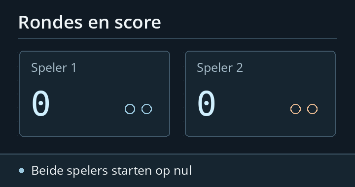

De gameplay en systemen die ik voor Nova Striker heb ontwikkeld.

Schematische animatie
Mijn bijdrage
Ik heb een GameManager gebruikt om de scores van beide spelers bij te houden.
Wanneer een speler doodgaat, krijgt de tegenstander een punt.
Daarna worden de posities, beweging en levens van beide spelers gereset, zodat een nieuwe ronde begint.
De eerste speler met twee punten wint. Vervolgens wordt automatisch het eindscherm geladen met de winnaar
en de eindscore.